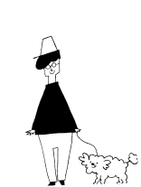

飼う前に知っておきたい！わんちゃんのこと
「わんちゃんと一緒に暮らしたい！」
「すぐにお迎えに行こう！」
ちょっと待って！わんちゃんと暮らすための準備は出来てる？
ここでわんちゃんの事を知って、わんちゃんともーっと楽しい毎日にしよう！
1. おうちの人と相談したかな？
一緒に暮らすおうちの人に、わんちゃんを飼っていいかお話したかな？ これから一緒に暮らす家族になるからね、みんなで話し合って決めようね！
2. わんちゃんが暮らす場所はあるかな？
小さいわんちゃんから、大きいわんちゃんまで色んな大きさのわんちゃんがいるね！ わんちゃんが眠る場所、トイレをする場所、ご飯を食べる場所が必要なんだ！ ぼくたちと一緒だね！ おうちの人と相談して、それぞれの場所を決めよう！
3. 毎日お世話できるかな？
わんちゃんも、毎日やりたいことがあるんだ！
「ご飯に、お散歩に、かけっこしたり、ボールでも遊びたいな！」
「お水はちょっぴりニガテだけど、お風呂も入れてほしいなぁ！」
これは、わんちゃんだけでは出来ないから…きみがお世話をしてあげてね！
どう？がんばれそう？？
4. 最後まで一緒にいてくれるかな？
わんちゃんは平均10歳から13歳になると、もうおじいちゃんおばあちゃんなんだ。 びっくりした？？ わんちゃんにとっての１日は、時間がとっても早く感じているのかな。 次第に、ちょっとずつあんまり食べられなくなっていって、 お散歩ものんびりになって、ボールも走っては取りに行けなくなって、 眠る時間が多くなって、きみとお話できなくなっても、 それまでは、ずっと一緒がいいな！